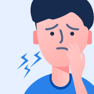

The coronavirus (COVID-19) was frist reported in wuhem,Hubei,chaina in
December 2019,the out break was later recognuzed as a pandenic by the world health
organization (WHO) on 1 March 2020.
About COVID-19
world wide cases
8,949,671
details
467,432
recovered
4,556,091
about the disease
coronavirus (COVID-19)
COVID-19 is a new illness that can affect your lungs and airways.its caused by a virus
called coronavirus.it was discovered in December 2019 in wuhan,hubei,china.
common signs of infection include respiratory symptoms, fever , cough, shortness of breath
and breathing diffculties , in more severe cases , infection can cause pneumonia , severe
acute respiratory syndrome , kidney faliure and
even death.
standard recommendations to prevent infection spread include regular hand washing . covering
mouth and nose when coughing and sneezing . thoroughly cooking meat and eggs .Avoid close
contact with anyone showing symptoms of respiratory
ilness such as coughing and sneezing.
What you need to know
How coronavirus is spread
symptoms of corona virus
How to protect your self
treatment for coronavirus
Myth-Busters of coronavirus
Questions & answers
how coronavirus is spread
transmission of COVID-19
Because its new illness , we do not know exactly how coronavirus spreads from person to
person . Similar viruses are spread in cough droplets.
Preson-to-person spread as close contact with infected
The coronavirus is tought to spread mainly from person to person this can happen between
people who are in close contact with one another
Touching or contact with infected surfaces or objects
A person can get COVID-19 by touching a surface or object that has the virus on it and
then touching their own mouth , nose , or posssibly their eyes
Droplets that from infected person coughs or sneezes
the coronavirus is tought to spread mainly from person to person.Thiscan happen between
people who are in close contact with ne another.
what are the symptoms of COVID-19?
symptoms of coronavirus
The most common symptoms of COVID-19 are fever,tiredness,and dry cough , some pqtients may
have aches,nasan congestion , runny nose , sore throat or diarrhea. These symptoms are
usually mild and begin gradually.Also the symptoms
may appear 2-14 days after expose.
Fever
High Fever -this means you feel hot to touch on your chest or back (you do not
need to measure your temperature).It is a common sign and also may appear in 2-10
days if you affect

cough
Continuous cough - this means coughing a lot for mare than an hour, or 3 or
more coughing episodes in 24 hours (if you usually have a cough , it may be worse
than usual).
Hortness of breath
Difficulty breathing -Around 1 out of every 6 people who gets COVID-19 becomes
seriously ill and develops difficulty breathing or shortness of breath
Stay at home and
call your doctor : if you think you have been exposed to COVID-19 and develop a
fever and any symptoms, such as cough or diffculity breathing , call your healthcare
provider as soon as possible for medical advice
how to protect yourself?
prevention & advice
There is currently no vaccine to prevent coronavirus disease 2019 (COVID-19). The best way
to
prevent ilness is to avoid being exposed to this virus.Stay aware of the latest
information on the COVID-19 outbreak, available on the WHO website and through your national
and local public health authority
Wash your hands frequently
Regularly and thoroughly clean your hands with an alcohol based hand rub or wash them
with soap and water for at least 20 seconds
Maintain social distancing
Maintain at least 1 metre (3 feet) distance between your self & anyone who is coughing or
sneezing. if you are too close , get chance to infect
Avoid touching face
Hands touch many surfaces and can pick up viruses. So hands can transfer the virus to
your eyes , nose or mouth and can make you sick
Pratice respiratory hygiene
Maintain good respiratory hygiene as covering your mouth & nose with your bent elbow or
tissue when cough or sneeze
Stay home if you are sick -stay home if you are
sick,except th grt medical cares
Cover your mouth and nose -with a tissue when you
cough or sneeze {throw used rissues in the trash}or use the inside of your
elbow.
Wear a facemask if you are -You should wear a
facemask when you are around the other people {e.g,sharing a room or vehicle}and
before upu emter a healthcare providers
Clean AND disinfect frequently touched surfaces daily -
This includes phones , tables , light switches , countertops , handles ,
desks , toliets , faucets , and sinks
Clean the dirty surfaces - Use detergent or soap and water prior
to dinsinfection
Stay informed about the local COVID-19 situation -
Get up -to-date information about local COVID-19 activity from public health officials
Dedicated lined trash can - if possible , dedicate
a libed trash can for the ill pearson,use gloves when removing the bags , and
handling & dis posing of trash
Follow steps to wash hands
why do i need to wash hand
be carefull & stay safe
trearment for coronavirus
To date, there is no vaccine and no specific antiviral medicine to prevent or treat
COVID-19.However, those affected should receive care to relieve symptoms. People
with serious illness should be hospitalied. Most paients recover thanks to supportive care
Antibiatics do not help, as they do not work against viruses. Treatment aims to relieve the
symptoms while your body fights the illness. you`ll need to stay in isolation, away from
other people, until you have recovered.
Self Care
if you have mid symptoms, stay at home until you`ve recovered. You can relieve your symptoms
if you:
Rest and sleep
Keep warm
Drink plenty od liquids
Use a room humidifer or take a hot shower to help
ease a sore throat and cough
Medical Treament
If you develop a fever, cough, and have diffculity breathing, promptly seek medical care.
Call in advance and tell your health provider of any recent travel or recent contact with
travellers.
DO'S & DON'TS
PROTECT YOURSELF
The best thing you can do now is plan for hou you can adapt ypur daily routine.take few steps
to protect your self as clean your hands ofthen,Avoid close contact , Cover coughs and
sneezes, clean daily used surface etc.The best
way to prevent illness to avoid being expose to this virus
frequently asked question
common question & answer
On February 11 2020 the world health ogranization announced an official
name for the disease that is causing the 2019 novel corona virus out
break frist identified in wuhan china. The new name of this disease
is coronavirus disease 2019,abbreviated as COVID-19. in COVID-19,'CO'
stands for corona, 'VI' for virus, and 'D' for disease. Formerly, this
disease was referred to as '2019' novel Coronavirus pr '2019-nCOV'.
A novel coronavirus is a new coronavirus that has not been previously
identified. The virus causing coronavirus disease 2019 (COVID-19), is
not the same as the coronavirus that commonly
circulate among humans and cause mild ilness, like the
common cold.
On February 11 2020 the world health ogranization announced an official
name for the disease that is causing the 2019 novel corona virus out
break frist identified in wuhan china. The new name of this disease
is coronavirus disease 2019,abbreviated as COVID-19. in COVID-19,'CO'
stands for corona, 'VI' for virus, and 'D' for disease. Formerly, this
disease was referred to as '2019' novel Coronavirus pr '2019-nCOV'.
There are many types of human
coronavirus including some that commonly cause mild upper-respiratory
tract illness. COVID-19 is a new disease, caused be a novel (or new)
coronavirus
that has not previously been seen in humans. The name of this disease
was selected following the World Health Organization (WHO) best practice
external icon for naming of new human infectious disease.
People can fight stigma and help, not hurt, others by providing social
support Counter stigma by learning and sharing facts. Communicating the
facts that viruses do not target specific racial or groups and how
COVID-19 actually spreads can help stop stigma.
People in the U.S may be worried or anxious about friends and realtives
who are living in or visiting areas where COVID-19 is spreading. Some
people are worried about the disease. Fear and anxiety can lead to
social stigma, for example, towards Chinese or other Asian Americans or
people who were in Q=quarantine
Stigma is discrimination against an identifiable group of people, a
place, or a nation. Stigma is associated with lack of knowledge about
how COVID-19 spreads, a need to blame someone, fears disease and death,
and gossip that spreads rumors and myths.
Stigma hurts everyone by creating more fear or anger towards ordinary
people instead of disease that is causing the problem.
Coronavirues are a large family of viruses. Some cause ilness in people,
and others, such as canine and feline coronavirus, onlt infect animals.
Rarely, animal coronavirus that infect animals have emerged to infect
people and can spread between people.
This is suspected to have occurred for the virus that causes COVID-19.
Middle East Respiratory Syndrome (MERS) and Severe Acute Respiratory
Syndrome (SARS) are two other examples of coronavirus that originated
from animals and then spread to people. More information about the
source and spread of COVID-19 is available on the Situation Summary : Source and Spread of the
virus
This virus was frist detecred in Wuhan City, Hubei Province, China. The
frist infections were linked to a live animal market, but the virus is
now spreading from person-to-person. It`a important to note that
person-to-person spread can happen on a continuum. Some viruses are
highly contagious (like measles), while other viruses are less so.
The virus that causes COVID-19 seems to be spreading easily and
sustainably in the Community ("community spread")in some affected geographic areas.Community
spread means
people have been infected with the virus in an area, including some who
are not sure how or where the became infected.
Learn what is known about the spread of newly
emerged coronavirus.
The virus that causes COVID-19 is spreading
from person-to-person.Someone who is actively sick with
COVID-19 can spread the illness to others. That why CDC recommends that
these
patients be isolated either in the hospital or at home (depending on how
sick they are) until they are better and no longer pose a risk of
infecting others.
How long someone is activelysick can vary so the decision on when to
relese someone from isolation is made on a case-by-case basis in
consultation with doctors, infection prevention and control experts, and
public health officals and involves considering specifics of each
situation including disease severity, illness signs and symptoms, and
results of labortaty testing for that patient.
Current CDC guidance for when it is Ok to
release someone from isolationis made on a case basis and
includes metting all of the following requirements:
The patient is free from fever without the use of of fever-reducing
medications.
The patient is no longer showing symptoms, including cough.
The paient has tested negative on at least two consecutive
respiratory specimens collected at least 24 hours apart.
Someone who has been released from isolation is not considered to
pose a risk of infection others.
It is not yet known whether weather and temperature impact the spread of
COVID-19. Some other viruses, like the common cold and flu, spread more
during cold weather months but that does not mean it is impossible
to become sick with theses viruses during other months. At this time, it
is not known whether the spread of COVID-19 will decrease when weather
becomes warmer. There is much more to learn about the transmissibilty,
severity, and other features associated with COVID-19 and investigations
are ongoing.
Coronavirues are generally thought to be spread from peron-to-person
through respiratory droplets. Currently there is no evidence to support
transmission of COVID-19 associated with food. Before preparing or
eating food it is important to alaways wash your hands with soap and
water for 20 seconds for general food safety. Throughout the day wash
your hands after blowing your nose, coughing or sneezing, or going
to the bathroom.
It may be possible that a person can get COVID-19 by touching a surface
or object that has the virus on it and then touching their own mouth,
nose, or possibly their eyes, but this is not thought to be the main
way the virus spreads.
In general, because of poor survivabilty of these coronavirus on
surfaces, there is likely very low risk of spread from food products or
packaging that are shipped over a period days or weeks at ambient,
refrigerated,
or frozen trmperatures.
Learn what is known about spread of
COVID-19.
Community spread means people have been infected with the virus in an
area, including some who are not sure how or where they became infected.
Protection measures for everyone
Stay aware of the latest information on the COVID-19 outbreak, available
on the WHO website and through your national and local public health
authority. Many countries around the world have seen cases of COVID-19
and several have seen outbraks. Authorities
in China and some other countries have succeeded in slowing or stopping
their Outbreak. However, the situation id unpredictable so check
regularly for the latest news.
You can reduce your chances of being infected or spreading COVID-19 by
taking some simple precautions:
Regularly and thoroughly clean your hands with an alcohol-based hand
rub or wash them with soap and water.
Why?Washing your hands with soap and water or
using alcohol-based hand rub kills that may be on your hand.
Maintain at least 1 metre (3 feet) distance between yourself and
anyone who is coughing or sneezing.
Why?When someone coughs or sneezes they spray
small liquid droplets from their nose or mouth which may contain
virus. If you are too close, you can brathe in droplets, including
the COVID-19
virus if the person coughing has the disease.
Avoid touching eyes or nose and mouth
Why?Hands touch many surfaces and can pick up
viruses. Once contaminated, hands can transfer the virus to your
eyes, nose or mouth. From there, the virus cand enter your body and
can
make you sick.
Make sure you, and the people around you, follow good respiratory
hygiene.This mwans covering your mouth and nose with your bent elbow
or tissue when you cough or sneeze. Then disoise of used tissue
immediately.
Why?Doplets spread virus. By following good
respiratory hygiene you protect the people around you from viruses
such as cold, flu and COVID-19.
STay at home if you feel unwell. If you have fever, cough and
diffculity breathing, seek medical attention and call in advance.
Follow the directions of your local health authority.
Why?National and local authorities will have the
most uo to date information on the situation in your area. Calling
in advance will allow your health care provider to quickly direct
tou
to the right health facility. This also protect you and help prevent
spread of viruses and other infections
Keep uo to date on the latest COVID-19 hotspot (cities or local
areas where COVID-19 is spreading widely). If possible, avoid
travelling to places-especially if you are an older person or have
diabetes,
heart or lung disease.
Why?You have a higher chance of catching COVID-19
in one of these area
Household members, intimate partners, and caregivers in a nonhealthcace
setting may have close contact with a person with symptomatic,
labortatory-confirmed COVID-19 or a person under investigation. Close
contacts
should monitor their health, they should call their healthcare provider
right away if they are develop symptoms suggestion of COVID-19 (e,g,
fever, cough, shortness of breath)
Close contacts should also follow these recommendations
Make sure that you understand and can help the patient follow their
healthcare provider`s instrusctions for medication(s) and care. You
should help the patient with basic needs in the home and provide
support for getting groceries, prescriptions, and
othe personal needs.
Monitor the patient`s symptoms. If you the patient is getting
sicker, call sis or her healthcare provider and tell them that the
patient has labortatory-confirmed COVID-19. This will help the
healthcare provider`s office take steps to keep other people
in the office or waiting room from getting infected. Ask the
healthcare provider to call the local or state health department for
additional guidance. If the patient has a medical emergency and you
need
to call 911, notify the dispatch personnel that the patient has, or
is being evaluated for COVID-19.
House hold members should stay in another room or be sperated from
the patient as much as posssible. Household members should use a
separate bedroom and bathroom, if avalibe
Prohibit visitors who do not have an essential need to be in the
home
Household members should care for any pets in the home. Do not
handle pets or other animals while sick. Dor more information, see
COVID-19 and Animale
Make sure that shared spaces in the home have good air flow, such as
by an air conditioner or opened window, weather permitting.
Perform hand hygiene frequently. Wash your hands often with soap and
water for at least 20 seconds or use alcohol-based sanitizer that
contains 60 to 95% alcohol, covering all surfaces of your hands and
rubbing until they feel dry. Soap and water should be used
preferentially if hands are visibly dirty.
Avoid touching your eyes, nose, and mouth with unwashed hands.
The patient should wear a facemask when you are around other people.
If patient is not able to wear a facemask (for example, because it
causes trouble breathing), you, as the caregiver, should wear a mask
when you are in the same room as the patient.
Wear a disposable facemask and gloves when you touch or have contact
with the patient`s blood, stool, or body fluids, such as saliva,
sputum, nasal mucus, vomit, urine.
Throw out disposable facemasks and gloves after using them.
Do not reuse.
When removing personal protective equipment, frist remove
and dispose of gloves. Then, immediately clean your hands
with soap and water or alcohol-based hand sanitizer. Next,
remove and dispose of
facemask, and immediately clean your hands again with soap
and water or alcohol-based hand sanitizer.
Avoid sharing household items with patient. You should not share
disghes, drinking glasses, cups, eating utensils, towels, bedding,
or other items. After the patient uses these items, you should wash
them
thoroughly (see below "Wash laundry thoroughly")
Clean all "high-touch" surfaces, such as counters, tabletops,
doorknobs bathroom fixtures, toilets, phones, keyboards, tablets,
and beside tables, every day. Also, clean any surfaces that may have
blood,
stool, or body fluids on them
Use a household Cleaning spray or wipe, according to the
labels contain instructions for safe and effective use of
the cleaning product including precautions you should take
when applying the product,
such as wearing gloves and making sure you have good
ventilation during use of the product.
Wash laundry thoroughly:
Immediately remove and wash clothes or bedding that have
blood, stool, or body fluids on them
Wear disposable gloves while handling solied items and keep
solied items away from your body. Clean your hands (with
soap and water or alcohol-based hand sanitizer) immediately
after removing your
glover
Read and follow directions on labels of laundry or clothing
items and detergent. in general, using a normal laundry
detergent according to washing machine instructions and dry
thoroughly using the
warmest temperatures recommended on the clothing label
Place all used disposable gloves, facemasks, and other contaminated
items in a lined container before disposing of them with other
household waste. Clean your hands (with soap and water or an
alcohol-based
hand sanitizer) immediately after handling these items. Soap and
water should be used preferentially if hands are visibly dirty.
Discuss any additional questions with your state or local health
department or healthcare provider. Check available hours when
contacting your local health department
Older adults and people of any age who have serious underlying medical
Conditionmay be at highter risk for more serious complications
from COVID-19. These people who may be at risk of egtting very sick
from this illness include:
Older adulte
People who have serious underlying medical Conditions like:
Heart disease
Diabetes
Lung disease
If you are at higher risk of getting very sick from COVID-19, you should:
stock up on supplies: take everyday precautions to keep space between
yourself and others, when you go out in public, keep away from
others who are sick, limit close contact and wash your hands often, and
avoid crowds, cruise travel, and non-essential travel. If there is an
outbreak in your community, stay home as much as possible. Watch
for symptoms and emergency signs. If you get sick, stay home and call
your doctor. More information on how to prepare, what to do if you get
sick, and how community and caregivers can support those at higher
risk is avalible on People ar Risk for
Serious Illness from
Only wear a mask if you are ill with COVID-19 symptoms (especially
coughing) or looking after someone who may have COVID-19. Disposable
face mask can only be used once. If you are not ill or looking after
someone
who is ill then you are wasting a mask. There is a world-wide shotage of
masks, so WHO urges people to use masks wisely.
WHO advises rational use of medical masks to avoid unnecessary wastage of
precious resources and mis-use of maske(see
Advice on the use of masks)
The most effective ways to protect your self and others against COVID-19
are to frequently clean your hands, cover your cough with the bend of
elbow or tissue and maintain a distance of at least 1 meter (3 feet)
from people who are coughing or sneezing. See baic protective measures
against the new coronavirus for more information
The most common symptoms of COVID-19 are fever, triedness, and dry
cough.Some patients may have aches and pains, nasal congestion, runny
nose, sore throat or diarrhea. These symptoms are usually mild and begin
gradually. Some people become infected but
don`t develop any symptoms and don`t feel unwell. Most people (about
80%) recover from the disease without needing special treatment. Around
1 out of every 6 people who gets COVID-19 becomes seriously ill
and develops diffculity breathing. Older people, and those with
underlying medical problems problems like high blood pressure, heart
problems or diabetes, are more likely to develop serious ilness. People
with fever, cough and difficulty breathing should seek medical
attention.
Read about COVID-19 Symptoms from
CDC.gov
Not everyone needs to be tested for COVID-19. For more information about
testing, see Testing COVID-19
The process and locations for testing vary from place to place. Contact
your state, local, tribal, or territorial department for more
information, or reach out to a medical provider. State and local public
health
departments have received tests from CDC while medical providers are
getting tests developed by commercial manufactures.While supplies of
these tests are increasing, it may still be difficult to find someplace
to get tested.
Using the CDC-developed diagnostic test, a negative result means that the
virus that causes COVID-19 was not found in the persom`s sample. In the
early stages of infection, it is possible the virus will not
be detected.
For COVID-19, a negative test result for a sample collected while a
person has symptoms likely means that the COVID-19 virus is not causing
their current ilness.
During an outbreak, stay calm and put your preparedness oaln to work.
Follow the steps below.
Protect yourself and others.
Stay home if you are sick. Keep away from people who are sick. Limit
close contact with others as much as possible (about 6 feet).
Put your household paln into action.
Stay informed about local COVID-19 situation.Be aware of
temporary school dismissals in your area, as this may affect your
household`s daily routine
Continue practicing everyday preventive actions.Cover coughs
and sneezes with a tissue and wash your hands often with soap and
water for at least 20 seconds. If soap and water are not available,
use
a hand sanitizer that contains 60% alcohol. Clean frequently touched
surfaces and objects daily using a regular household detergent and
water.
Outbreak can be stressful for adults and children. Talk with your
children about the outbreak, try to stay calm, and reassure them that
they are safe. If appropraite, exxplain to them that most ilness from
COVID-19
seems to be mild
Children respond differently to stressful
situationss than adults.
This is a new virus and we are still learing about it, but so far, there
does not seem to be a lot of ilness in children. Most illness, including
serious ilness, is happening in adults of working age and older
adults. If there cases of COVID-19 that impact your child`s school, the
school may dimiss students. Keep track of school dismissals in your
community. Read or watch local media sources that report school
dismissals. If school dismissed temporarily, use alternative childcare
arrangements, if needed.
If your child/children become sick with COVID-19, notify their healthcare
facility or school. Talk with teachers about classroom assignments and
activites they can do from home to keep up with their schoolwork.
Discourage children and teens from gathering in other public places while
school is dismissed to help slow the spread of COVID-19 in the community
Depending on the situation, public health officials may recommend
community actions to reduce exposures to COVID-19, such as school
dismissals. Read or watch local media sources that report school
dismissals
or and watch for communication from your child`s school. If schools are
dismissed temporarily, discourage students and staff from gathering or
socializing anywhere, like at a friend`s house, a favorite restaurant,
or the local shopping mall.
Coronavirues are generally thought to be spread from peron-to-person
through respiratory droplets. Currently there is no evidence to support
transmission of COVID-19 associated with food. Before preparing or
eating food it is important to alaways wash your hands with soap and
water for 20 seconds for general food safety. Throughout the day wash
your hands after blowing your nose, coughing or sneezing, or going
to the bathroom.
It may be possible that a person can get COVID-19 by touching a surface
or object that has the virus on it and then touching their own mouth,
nose, or possibly their eyes, but this is not thought to be the main
way the virus spreads.
In general, because of poor survivabilty of these coronavirus on
surfaces, there is likely very low risk of spread from food products or
packaging that are shipped over a period days or weeks at ambient,
refrigerated,
or frozen trmperatures.
Learn what is known about spread of
COVID-19.
Follow the advice of your local health officials. Stay home if you can.
Talk to your employer to discuss working from home, talking leave if you
or someone in your household gets sick with COVID-19 symptoms,
or if your child`s school is dismissed temporarily. Employers should be
aware that more employees may need to stay at home to care for sick
children or other sick family members than is usual in case of
a community outbreak.
From the evidence so far, the COVID-19 virus can be transmitted in
ALLAREAS, including areas with hot and humid weather. Regardless of
climate, adopt protective measures if you live in, or travel to an area
reporting COVID-19. The best way to protect
yourself against COVID-19 if by frequently cleaning your hands. By doing
this tou eliminate viruses that may be on your hands and avoid infection
that could occur by then touching your eyes, mouth, and nose.
There is no reason to believe that cold weather can kill the new
coronavirus or other disease. The normla human button temperature
remains around 36.5^C to 37^C, Regardless of the extrenal temperature or
weather. The most effective way to protect yourself
against the new coronavirus is by frequently cleaning your hands with
alcohol-based hand rub or washing them with soap and water.
Taking a hot bath will not prevent you from catching COVID-19. Your
normal body temperature remains around 36.5^C to 37^C, Regardless of the
temperature of your bath or shower. Actualy, takeing a hot bath with
extremely hot water can be harmful, as it
can burn you, The best way to protect yourself against COVID-19 is by
frequently cleaning your hands. By doing this you eliminate viruses that
may be on your hands and avoid infection that could occur by
then touching your eyes, mouth, and nose.
To date there has been no information nor evidence to suggest that the
new coronavirus could be transmitted by mosquitoes. The new coronavirus
is a respiratory virus which spreads primarily through deoplets
generated when an infected person coughs or
sneezs, or through droplets of saliva or discharge fro the nose. To
protect yourself, clean your hands frequently with an alcohol-based hand
rub or wash them with soap and water. Also, avoid close contact
with anyone who is coughing and sneezing
No. Hand dryers are noy effective in killing the 2019-nCOV. To protect
yourself against the new coronavirus, you should frequently clean your
hands with an alcohol-based hand rub or wash them with soap and water.
Once your hands are cleaned, you should
dry them thoroughly by using paper towels or a warm air dryer
UV lamps should not be used to sterilize hands or other areas of skin as
UV radiation can cause skin irritation
Thermal scanners are effective in detecting people who have developed a
fever (i.e have a higher than normal body temperature) because of
infection with the new coronavirus
How ever, they cannot detect people who are infected but are not yet
sick with fever. This is because it takes between 2 and 10 days before
people who are infected become sick and develop a fever
No vaccines against pneumonia, such as pneumococcal vaccine and
Haemophilus influenza type B (Hib) vaccine, do not provide protection
against the new coronavirus
The virus is so new and different that it needs its own vaccine.
Researchers are trying to develop a vaccine against 2019-nCOV, and WHO
is supporting their efforts
Although these vaccines are not effective against 2019-nCOV ,
vaccination against respiratory ilnesses is highly recommended to
protect your health.
RECENT FROM BLOG
latest update
Caring someone at home
Most people who get sick COVID-19 will have only mid ilness and should recover at
home.care at home can help stop the spread of COVID-19
15 ways to keep safe and healthy
Most people who get sick with COVID-19 will have only mid ilness and should recover at
home.care at home can help stop the spread of COVID-19
if you think you are sick
If you are sick with COVID-19 or think you might have it , follow the steps below to help
protect other people in your home and community
CVID19
This website id for health information and advice about coronavirus(COVID-19), how to prevent and
protect yourself from disease.
Learn about the government response to coronavirus on GOV.UK.
2021 COVID-19 Template Made by Amany
AbdelfatahThanks to - Mina Karam Ghopiral-.
Disclamer. We hope you fing the information presented on this website useful.This website is for
general information and raise awareness. If you have and doubt please verify from respective site.